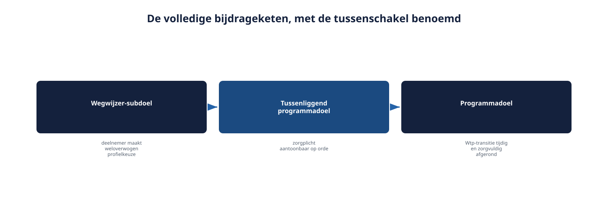
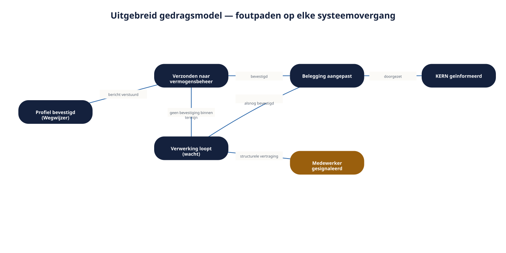

Deel 15 — Modeling: context-, doel- en gedragsmodellen op programmaniveau
Reader · Ductus-cursus Requirements engineering · niveau 2 (professional) · deel 15 van 22
Cursus Requirements Engineering — Ductus. Deze cursus bereidt voor op de CPRE-certificering van IREB en is uitdrukkelijk geen vervanging van het officiële syllabus- en examenmateriaal. Dit deel telt twee dagdelen, verdeeld in Dagdeel A (context en doelen) en Dagdeel B (gedrag over systeemgrenzen).
Leerdoelen
Na dit deel kun je:
- een contextdiagram opstellen op programmaniveau, met meerdere interne deelsystemen en externe formele partijen;
- het verschil toepassen tussen de systeemgrens van Wegwijzer en de programmagrens van het Mutatieplatform;
- een doelmodel van een deelsysteem verbinden aan een breder programmadoelmodel, inclusief indirecte bijdragen;
- een gedragsmodel opstellen dat over systeemgrenzen heen werkt;
- orchestratie en choreografie als twee patronen voor systeemoverstijgend gedrag onderscheiden;
- de "wat als het misgaat"-toets toepassen op een keten van systemen, niet alleen op één systeem.
Dagdeel A — Context en doelen op programmaniveau
15.1 Waar houdt "het systeem" op?
Ruben pakt de contextdiagram-techniek uit deel 2 (niveau 1) erbij om Wegwijzer in kaart te brengen. Al snel loopt hij vast: is KERN een externe entiteit, of hoort het eigenlijk bij "het systeem" omdat het onderdeel is van hetzelfde Programma Mutatieplatform? Is het vermogensbeheerplatform net zo extern als de nabestaande was bij het Nabestaandenloket, of is het iets anders, omdat het een formele, contractuele relatie heeft in plaats van een menselijke belanghebbende?
Het antwoord is dat de vraag zelf een verkeerde vooronderstelling bevat: er is niet één systeemgrens, maar twee niveaus van grens, en een contextdiagram moet expliciet aangeven op welk niveau het getekend is.
15.2 Twee grenzen, twee niveaus
De systeemgrens van Wegwijzer. Wat het Wegwijzer-team zelf bouwt en beïnvloedt: de vragenlijst, de profielweergave, de scenariopresentatie. Vanuit dit niveau bekeken zijn KERN, het vermogensbeheerplatform, en zelfs de bredere Mutatieplatform-rapportage externe entiteiten — precies zoals in deel 2 van niveau 1.
De programmagrens van het Mutatieplatform. Wat het hele programma omvat: Wegwijzer, KERN, de Deelnemeradministratie, de Mutatieplatform-rapportage horen hier allemaal binnen. Vanuit dit niveau bekeken zijn alleen werkelijk externe partijen — het vermogensbeheerplatform, de sociale partners, de toezichthouders — buiten de grens.

Dit is geen theoretisch onderscheid. Het bepaalt heel praktisch wélk contextdiagram je op een gegeven moment nodig hebt: voor een gesprek met het Wegwijzer-ontwikkelteam over hun eigen bouwscope is het Wegwijzer-niveau diagram het juiste; voor een gesprek met Bram Kessels over samenhang tussen deelsystemen is het programmaniveau diagram nodig. Een diagram dat de twee niveaus door elkaar mengt, verwart beide gesprekken.
15.3 Het programmacontextdiagram
Naast het vertrouwde contextdiagram van Wegwijzer zelf (dat verder werkt zoals in deel 2 van niveau 1) is er nu een tweede, hoger-niveau diagram nodig: het programmacontextdiagram. Dit toont de deelsystemen van het Mutatieplatform als blokken naast elkaar, met de werkelijk externe partijen eromheen.

De regels voor een goed contextdiagram uit deel 2 (niveau 1) blijven onverkort gelden — geen interne werking, geen schermen, inhoudelijke namen op de uitwisselingen — alleen is het "systeem" in het midden nu zelf samengesteld uit meerdere deelsystemen. De drie vragen uit deel 2 (ontbreekt er iemand, klopt de richting, binnen of buiten) werken nog steeds, nu toegepast op deelsystemen in plaats van louter menselijke of organisatorische entiteiten.
De grijze zone, nu tussen systemen
De grijze zone uit deel 2 (niveau 1) — iets waarvan nog niet vaststaat of het binnen of buiten de grens valt — komt op programmaniveau vaker voor, en met grotere gevolgen. Is de statusweergave van een risicoprofiel een taak van Wegwijzer, of hoort die eigenlijk bij de Mutatieplatform-rapportage? Zulke vragen horen, net als in niveau 1, op een expliciete "grens open"-lijst, nu bijgehouden op programmaniveau en gedeeld met Bram Kessels.
15.4 Doelmodellen die systemen verbinden
Het doelmodel van Wegwijzer, zoals je dat in deel 7 (niveau 1) leerde opstellen, bestaat nog steeds — maar het is nu een subboom van een breder programmadoelmodel.

Voorbeeld:
Programmadoel: Wtp-transitie tijdig en zorgvuldig afgerond (1-1-2028)
├── Subdoel: Deelnemersgegevens correct gemigreerd (Deelnemeradministratie)
├── Subdoel: Zorgplicht aantoonbaar op orde bij individuele keuzes
│ └── [Wegwijzer-doelmodel, zie deel 7 niveau 1, hier als subboom]
│ ├── Onterechte doorbetaling na overlijden voorkomen → n.v.t. bij Wegwijzer
│ ├── Deelnemer maakt een weloverwogen risicoprofielkeuze
│ └── Nabestaanden minder laten bellen → n.v.t. bij Wegwijzer
└── Subdoel: Uitvoeringsprocessen (KERN) blijven correct werken tijdens transitie15.5 De bijdragetoets op programmaniveau
De bijdragetoets uit deel 7 (niveau 1) — draagt dit subdoel aantoonbaar bij aan het doel erboven? — blijft het instrument, maar de keten wordt op programmaniveau vaak langer en indirecter.
Wegwijzers subdoel "deelnemer maakt een weloverwogen risicoprofielkeuze" draagt niet rechtstreeks bij aan "Wtp-transitie tijdig en zorgvuldig afgerond" — er zit een tussenliggend programmadoel tussen ("zorgplicht aantoonbaar op orde"). Dat is geen zwakte van de bijdrage; het is normaal op deze schaal. Wat wél een zwakte is: een subdoel waarvan de keten naar het programmadoel niet te reconstrueren valt, ook niet via een tussenstap. Zo'n subdoel is, net als in niveau 1, een kandidaat om te heroverwegen — mogelijk een verkapte wens of ontwerpvoorkeur (deel 7, niveau 1, het "professioneel uiterlijk"-voorbeeld).
Praktische vuistregel: bij elk subdoel op programmaniveau, benoem expliciet de volledige keten tot aan het programmadoel, ook als die twee of drie stappen lang is. Een keten die je niet kunt reconstrueren zonder giswerk, is een signaal, geen formaliteit.

Dagdeel B — Gedrag over systeemgrenzen
15.6 Eén melding, drie systemen
Wanneer een deelnemer in Wegwijzer een risicoprofiel bevestigt, gebeurt er meer dan één systeem kan afhandelen. Wegwijzer slaat de keuze zelf op, stuurt een bericht naar het vermogensbeheerplatform (zodat de belegging kan worden aangepast), en KERN moet op de hoogte worden gebracht zodat een toekomstige uitkeringsberekening de juiste gegevens gebruikt.
Het enkelvoudige gedragsmodel uit deel 7 (niveau 1) — toestanden en overgangen binnen één systeem — volstaat hier niet meer. Het gedrag speelt zich af over drie systemen, elk met een eigen toestandsmodel, die op elkaar moeten aansluiten.

15.7 Orchestratie versus choreografie
Twee patronen beschrijven hoe systemen samen gedrag vertonen. Dit is requirements-kennis, geen architectuurontwerp — het gaat erom dat je als requirements engineer herkent welk patroon van toepassing is, zodat je het juiste soort vragen stelt en het juiste soort gedragsmodel maakt.
Orchestratie. Eén systeem (of één rol) kent de volledige flow en stuurt de andere systemen actief aan. Bijvoorbeeld: Wegwijzer zelf houdt bij welke stappen zijn voltooid en stuurt gericht berichten naar KERN en het vermogensbeheerplatform, in een vaste volgorde, en wacht op bevestiging voordat de volgende stap start.
Choreografie. Geen enkel systeem kent de volledige flow. Elk systeem reageert zelfstandig op gebeurtenissen die het waarneemt, zonder een centrale regisseur. Bijvoorbeeld: Wegwijzer publiceert een gebeurtenis ("risicoprofiel bevestigd"), en zowel KERN als het vermogensbeheerplatform reageren daar ieder voor zich op, zonder dat Wegwijzer weet — of hoeft te weten — wat ze daarmee doen.

Waarom dit voor requirements engineering uitmaakt
Het patroon bepaalt wélke requirement waar hoort en wélke vraag je aan wie stelt. Bij orchestratie is er één partij (hier: Wegwijzer) die verantwoordelijkheid draagt voor het geheel van de flow, en die dus ook de requirement "wat gebeurt er als KERN niet reageert" moet dragen. Bij choreografie ligt die verantwoordelijkheid impliciet verdeeld — en dat vraagt van de requirements engineer extra scherpte: wie legt vast wat er gebeurt als een van de reagerende systemen faalt, als niemand daar expliciet "eigenaar" van is?
Voor Wegwijzer is orchestratie de meest waarschijnlijke keuze, gezien de zorgplicht-eis dat een deelnemer altijd moet kunnen navertellen wat er met zijn keuze is gebeurd — een vereiste die om een duidelijk aanwijsbare, controleerbare volgorde vraagt, eerder dan om losjes gekoppelde, zelfstandige reacties.
15.8 De "wat als het misgaat"-toets, nu systeemoverstijgend
De toets uit deel 7 (niveau 1) — voor elke toestand, wat als hier iets misgaat, uitblijft, of afwijkt — moet nu voor elke schakel in de keten worden gesteld, niet alleen binnen één systeem.
Voor elke overgang tussen systemen:
- Wat als het ontvangende systeem niet (op tijd) reageert?
- Wat als het bericht wel aankomt, maar niet correct kan worden verwerkt?
- Wie wordt hierover geïnformeerd, en wat ziet de deelnemer daarvan?

Toegepast op Wegwijzer: als het vermogensbeheerplatform niet binnen een redelijke termijn bevestigt dat de belegging is aangepast, mag de deelnemer niet in onzekerheid blijven — Wegwijzer moet een tussentijdse status tonen ("verwerking loopt") en, bij structurele vertraging, een medewerker signaleren. Dit is dezelfde discipline als de toestand [Wacht op bevestiging medewerker] uit deel 7 (niveau 1), nu toegepast op een systeem in plaats van een collega.
15.9 Het risicoprofielenbesluit vertaald naar modellen
Het besluit uit deel 14 — het aantal risicoprofielen, na het doorlopen van het belangenconflict tussen Marloes, Sven, Corrie en Petra — krijgt hier zijn eerste modelmatige vertaling:
- Als doelmodel-tak: het gekozen aantal draagt bij aan zowel "nauwkeurigheid" als "begrijpelijkheid als zorgplichtvereiste", met de afweging die tot het besluit leidde als toelichting.
- Als gedragsmodel: de bevestigingsflow (Wegwijzer → vermogensbeheerplatform → KERN) met expliciete foutpaden zoals in paragraaf 15.8.
Deel 16 werkt de rekenregels áchter het risicoprofiel zelf verder uit — de combinatie van leeftijd, horizon en risicohouding die bepaalt welk profiel wordt voorgesteld.
Wat verandert er als je iteratief werkt?
Systeemoverstijgende modellen worden zelden in één keer compleet getekend — ze groeien samen met de architecten en analisten van de aangrenzende systemen, vaak in een apart, iets lager-frequent afstemmingsritme dan de sprints van het Wegwijzer-team zelf (vergelijk deel 13: zware, gecombineerde technieken passen bij periodieke momenten). Het programmacontextdiagram verandert doorgaans traag; het gedragsmodel van de bevestigingsflow groeit met elke sprint waarin een nieuw stukje van de keten wordt gebouwd.
Samenvatting
- Twee grenzen, twee niveaus: de systeemgrens van Wegwijzer en de programmagrens van het Mutatieplatform — elk met een eigen contextdiagram.
- Een doelmodel op programmaniveau verbindt het doelmodel van een deelsysteem via een langere, soms indirecte keten aan het programmadoel — de bijdragetoets blijft het instrument om die keten te toetsen.
- Systeemoverstijgend gedrag vraagt een gedragsmodel dat meerdere toestandsmodellen met elkaar verbindt.
- Orchestratie (één regisseur) en choreografie (zelfstandige reacties) zijn twee patronen die bepalen wie welke requirement draagt.
- De "wat als het misgaat"-toets geldt nu voor elke schakel tussen systemen, niet alleen binnen één systeem.
Begrippen
programmagrens · programmacontextdiagram · programmadoelmodel · bijdrageketen · systeemoverstijgend gedrag · orchestratie · choreografie
Leeswijzer naar het volgende deel
Deel 16 sluit de Modeling-module af met data en beslisregels: hoe je de rekenregels achter het risicoprofiel zelf modelleert, en hoe je een beslisregelset op consistentie en volledigheid toetst.